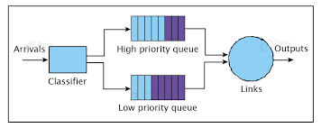
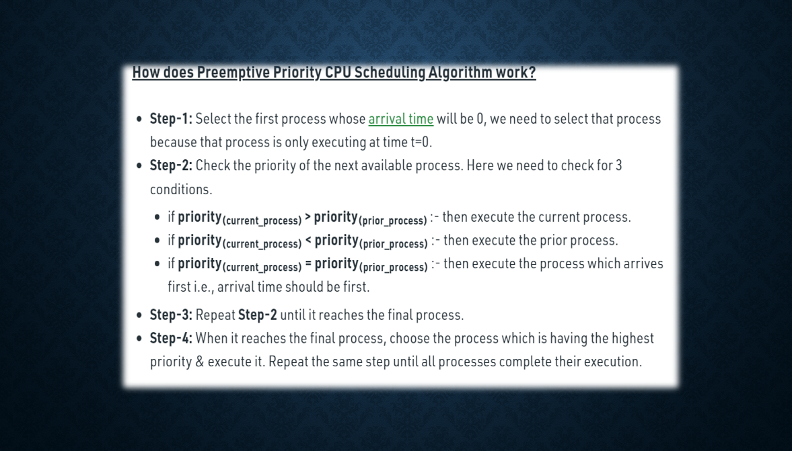
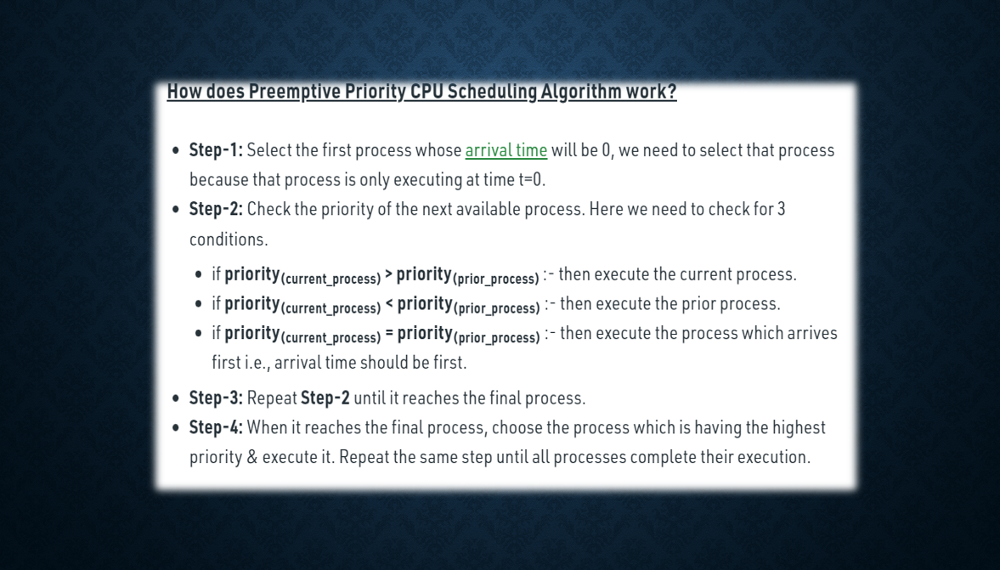

About Priority Scheduling Algorithm



 Back to home
In Priority scheduling, there is a priority number assigned to each process. In some systems, the lower the number, the higher the priority. While, in the others, the higher the number, the higher will be the priority. The Process with the higher priority among the available processes is given the CPU. There are two types of priority scheduling algorithm. One is Preemptive priority scheduling while the other is Non Preemptive Priority scheduling.
Preemptive Priority Scheduling
In Preemptive Priority Scheduling, at the time of arrival of a process in the ready queue, its
Priority is compared with the priority of the other processes present in the ready queue as well as
with the one which is being executed by the CPU at that point of time. The One with the highest
priority among all the available processes will be given the CPU next.
The difference between preemptive priority scheduling and non preemptive priority scheduling is
that, in the preemptive priority scheduling, the job which is being executed can be stopped at the
arrival of a higher priority job.
Once all the jobs get available in the ready queue, the algorithm will behave as non-preemptive
priority scheduling, which means the job scheduled will run till the completion and no preemption
will be done.
Example
Consider 7 processes P1, P2, P3, P4, P5, P6 and P7 with their respective priorities, Arrival Times and Burst times given in the table below.
 Back to home